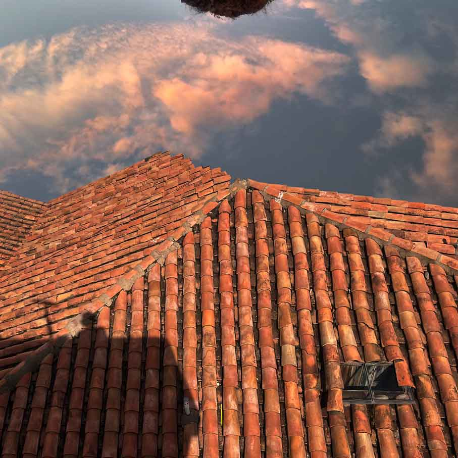

YA NO ATARDECE (2026)
Sello discográfico: Buh Records
El álbum reúne composiciones creadas entre 2023 y 2025 durante un tránsito entre Lima y Cusco, articulado como una búsqueda de distancia simbólica frente a la ciudad. Las piezas corresponden a una metáfora sobre la civilización en altura, los desplazamientos andinos y territorios remotos.
Propone un recorrido por atmósferas densas y oníricas donde guitarras eléctricas, voces, secuencias digitales y grabaciones de campo se entrelazan en estructuras extensas, texturales y cambiantes, rozando expresiones musicales cercanas al ambient.
Estreno: 10 de abril


TERRARIO (2021)
escuchar en bandcamp
Anthology of experimental music from Perú (2021)
escuchar en bandcamp